项目介绍

传统成像技术普遍采用“先采集，后处理”的模式，但在实际应用中面临采集速度受限、感知灵敏度不足、实时性差等多重挑战。其根本原因在于前端光学采集系统与后端计算方法的割裂，导致光信息采集通量受限、成像质量不佳及能耗水平较高。为此，本项目提出了前端光学采集与后端计算深度融合的新型编码成像体系，旨在突破传统成像技术的性能瓶颈与能耗限制。项目围绕高速、高灵敏度及低功耗成像目标，开展了高时空分辨率、高灵敏度、低功耗编码摄像理论与关键技术研究，继而设计轻量级原型系统，提高了编码摄像系统的实用性。在上述研究的基础上，项目组设计并搭建了面向无人系统应用的编码成像验证平台，通过应用验证与示范，推动技术落地，为无人驾驶、智能监控及生物医学成像等领域提供理论支持与技术保障。
代表性研究成果
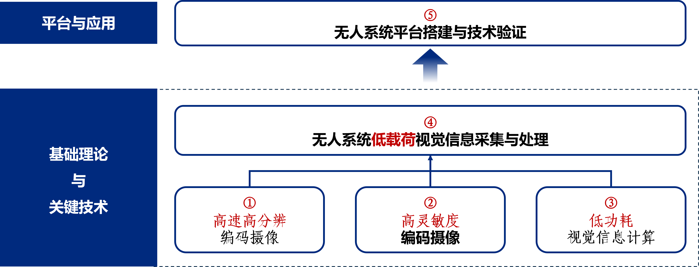以下是项目取得的一些代表性成果。
成果一：高速高分辨编码摄像
现有挑战：传统成像系统通量受限，无法兼顾空域结构和时域变化细节；现有编码摄像机制受物理器件限制，空间分辨率局限于百万像素、帧率局限于千赫兹。
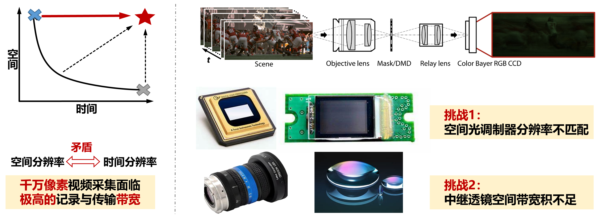方案一：千万像素百赫兹成像
提出了深度光学压缩编码成像方法，通过编码器件和解码算法联合优化，实现了千万像素视频百赫兹编码成像，并大幅提升了系统光通量和成像通量。
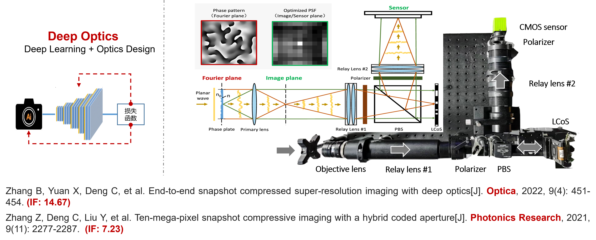实验结果：空间分辨率16X：1.2Mega → 19.2Mega; 时间分辨率 8X：15fps → 120fps。
方案二：百万像素万赫兹成像
提出了事件增强的时空压缩编码成像方法，以事件引导高速场景结构的重建，将百万像素视频帧率从千赫兹提升至万赫兹。

实验结果：
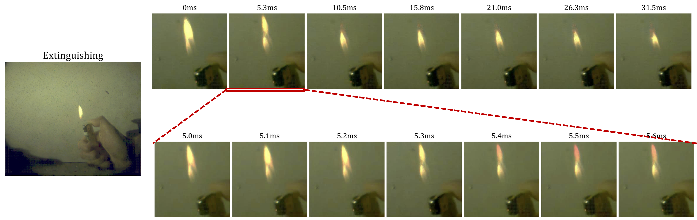成果二：高灵敏度编码摄像
现有挑战：光电传感器灵敏度和响应范围有限，在复杂环境光照下成像性能退化，无法有效感知场景信息。

方案一：大规模有标注弱光视频数据库
构建大规模低照度自然场景数据集DarkVision，包含1000个静态场景、100个动态序列、6个光照度、3种相机，提供了正常光照数据参照和关键物体标注。
 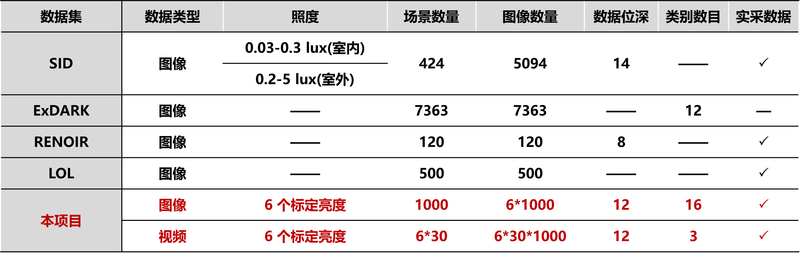
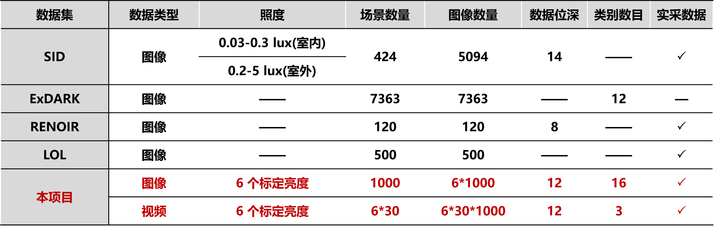
方案二：NIR+RGB低照度视频采集
设计与研制了紧凑的NIR-RGB双传感器相机系统，采集光子数提升1倍，联合挖掘时空谱结构，实现了低照度环境下高灵敏度视频采集。
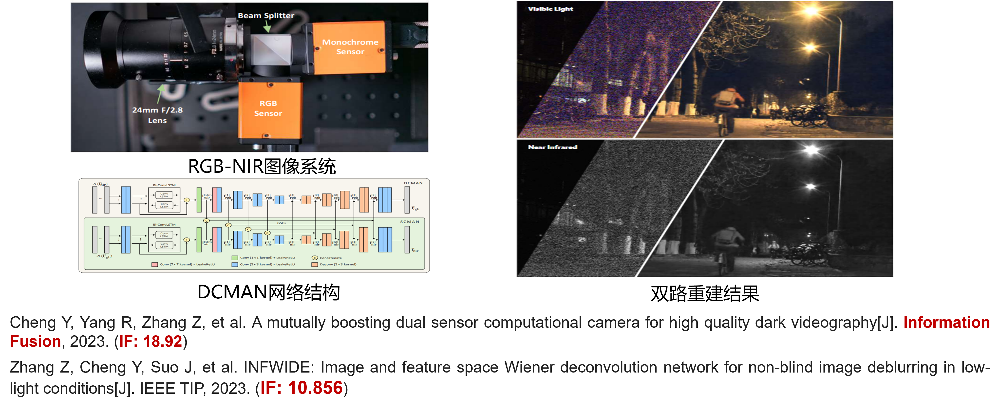设计了一个基于双向ConvLSTM和CNN的双通道多帧注意网络，联合挖掘时空谱结构，实现了低照度环境下高灵敏度视频采集。
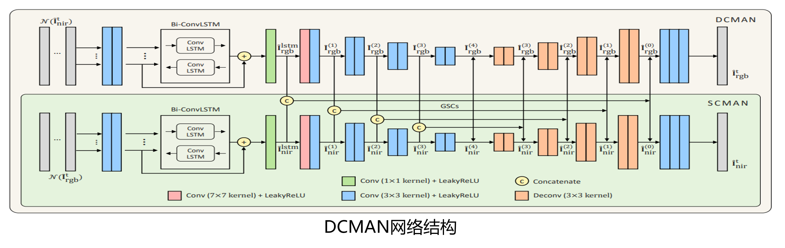实验结果：
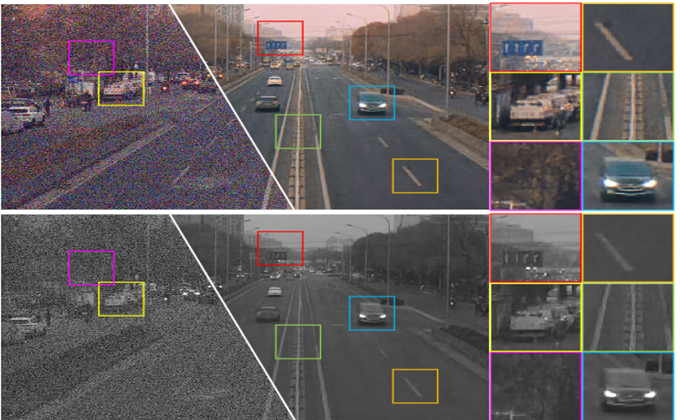方案三：Event+RGB大动态范围视频采集
设计与搭建了Event+RGB的混合相机系统，提出了事件引导的光流配准和灰度补偿方法，实现大动态范围场景亮度补偿和物体鲁棒检测。
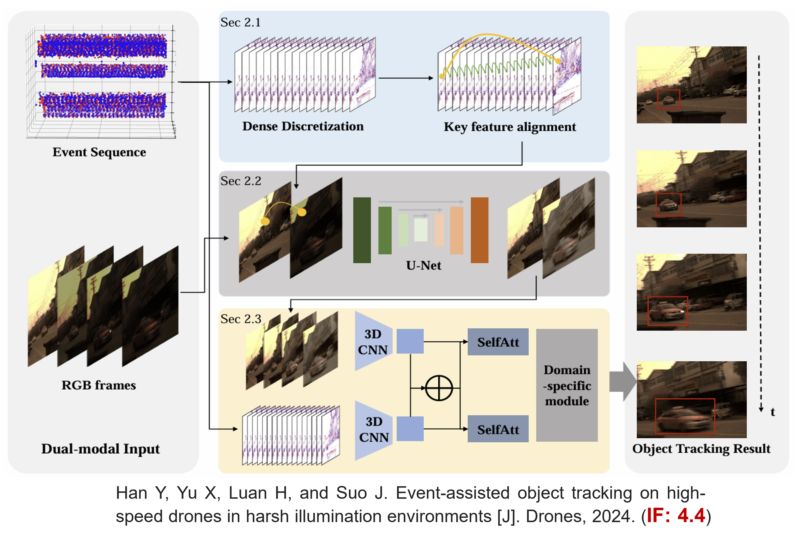实验结果：
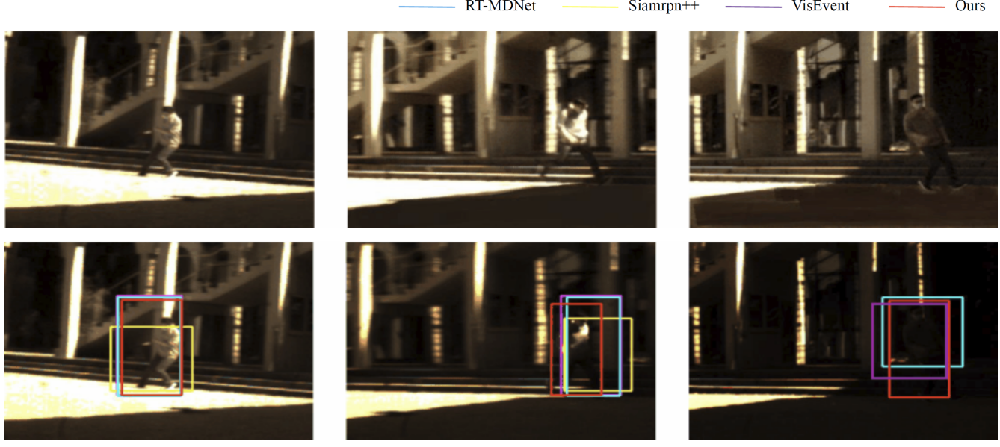 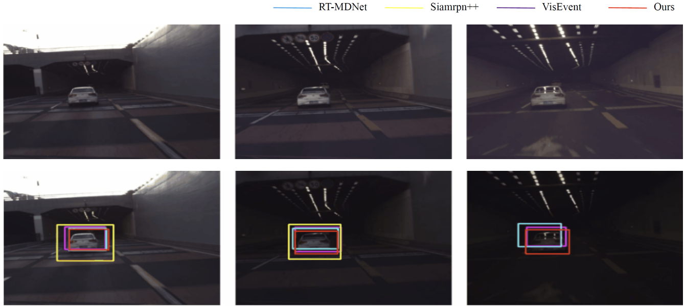方案四：夜间场景鲁棒物体检测
设计了光照模式感知策略，提出了时-空联合的光照自适应交叉注意力机制，实现夜间低照度、大动态范围的物体鲁棒检测。
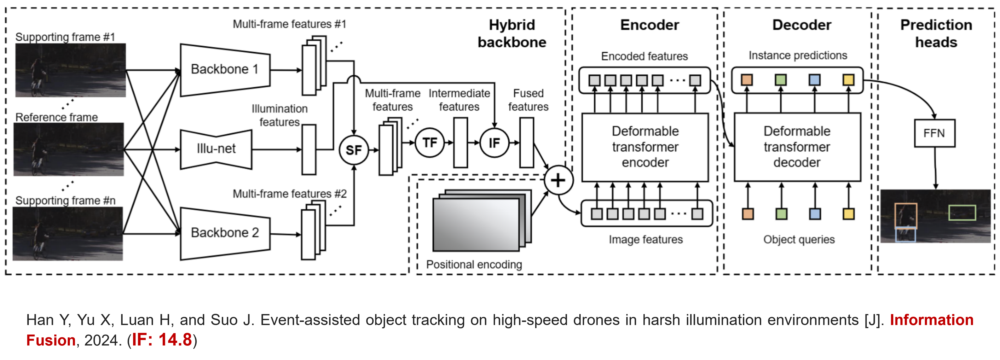实验结果：
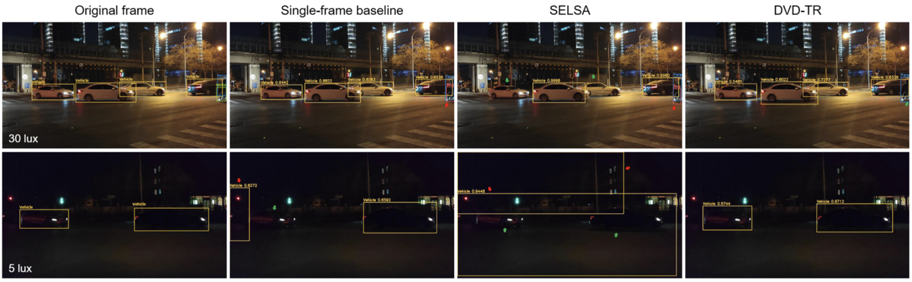成果三：低功耗视觉信息采集
现有挑战：无人平台计算资源有限，紧致耦合视频解码重建复杂度高，已有重建算法需在重建精度、灵活度、速度之间折衷，无法实现大规模视频高效解耦重建。
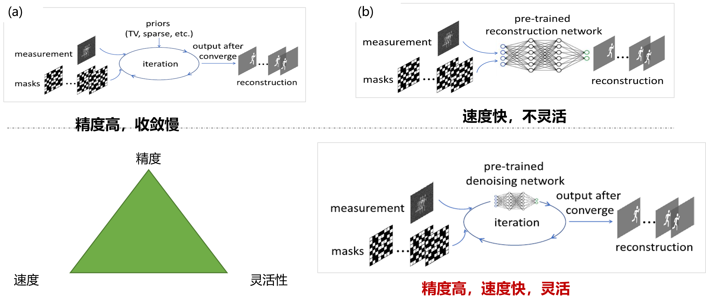方案一：大规模视频信息快速解耦重建
提出了模型与数据联合驱动的混合解码架构，在精度相当的前提下解码速度提升两个数量级，百万像素的单曝光高速高分辨视频解码重建时间从十分钟级降低至秒级。
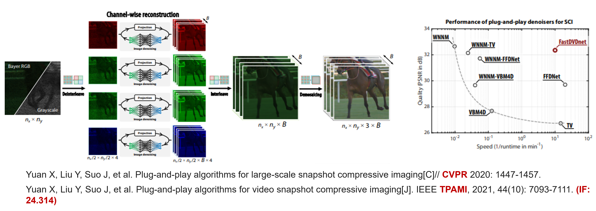实验结果：

方案二：黑盒神经网络多项式展开
提出了黑盒神经网络的Taylor展开，实现常见神经网络架构的多项式分解，显著降低神经网络的推理复杂度，为神经网络在资源受限平台的部署奠定基础。
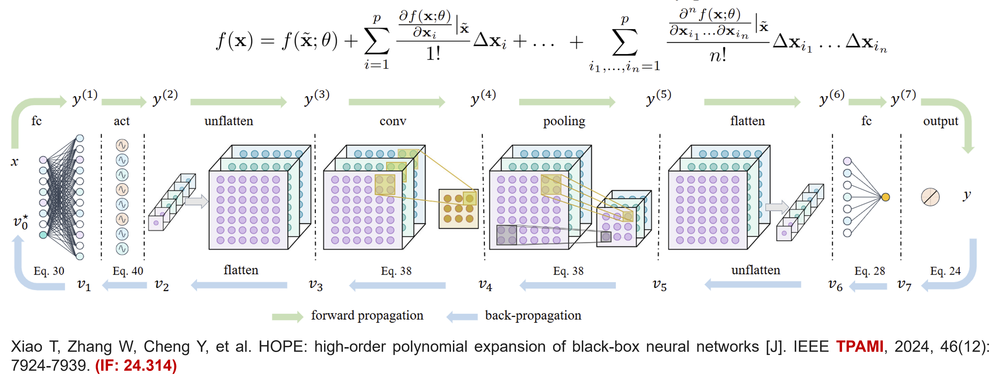实验结果：
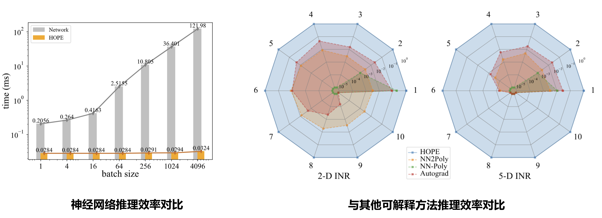成果四：低载荷视觉信息采集与处理
现有挑战：无人平台载荷受限，对视觉感知设备的体积、重量提出了严苛的限制，亟需设计轻量化成像系统，部署对应的高效解码重建算法。
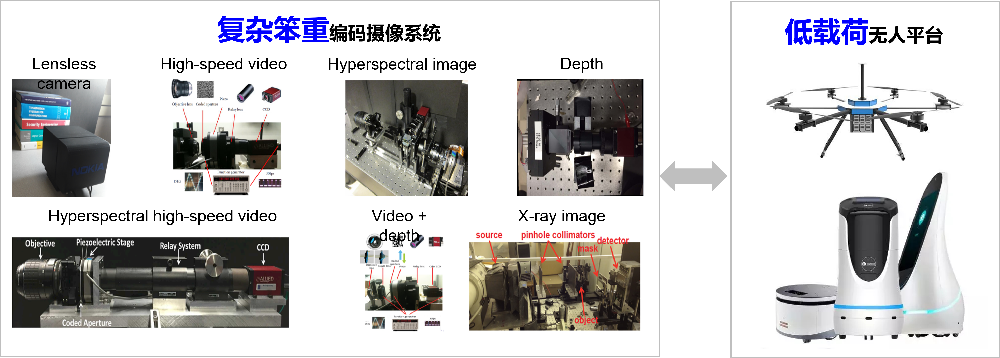方案一：编码曝光高速高分辨相机
设计与搭建了编码曝光相机，提出了基于隐神经表示的视频重建网络，从单张编码曝光图像解码连续视频，实现了轻型的高速高分辨成像。

实验结果：
方案二：编码曝光物体检测
设计和搭建了运动信息解码重建网络，直接从编码曝光图像解析物体运动轨迹，降低了物体检测与运动预测功耗。

实验结果：

方案三：便携式千万像素光谱相机
设计和研发了基于彩色胶片的轻量级光谱视频采集系统，替代了体积庞大的中继和色散器件，实现了手持式6500万像素超光谱视频成像。

实验结果：


推广应用
应用案例一：移动平台视觉导航
搭建移动无人测试平台，部署视觉、光谱、力觉、惯性、热传感器等，并开发多源态势融合算法，实现环境感知。


应用案例二：高速高分辨工业检测系统
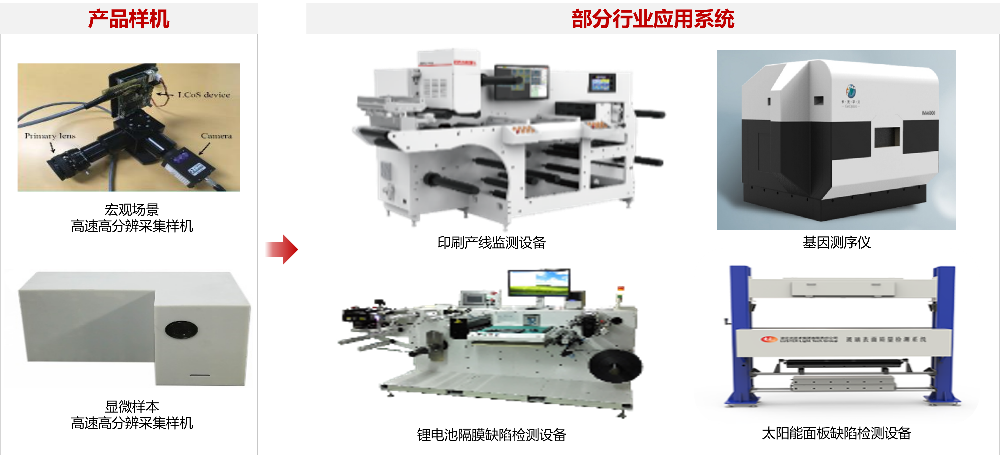 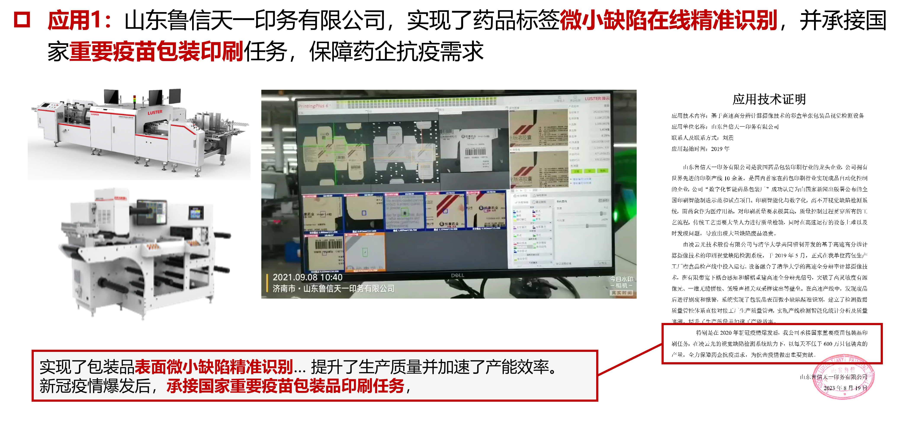

成果总结
项目实施过程中，课题组成员在国内外重要学术期刊及会议上发表了47篇学术论文，获授权13项国家发明专利，登记软件著作权8项，获得省部级一等奖3项、二等奖1项。综上所述，课题组已超额完成了预期研究目标，并为后续相关研究奠定了坚实的基础。
人才培养
- 博士研究生8名、硕士研究生10名
- 博士后2名
- 入选教育部青年长江学者1名
- 晋升教授2名，骨干成员晋升副教授1名
获奖
- 中国图象图形学学会技术发明一等奖2次（序1、2）
- 科技进步一等奖1次（序1）
- 中国电子学会技术发明二等奖1次（序1）
- 江苏省优秀硕士论文奖1人次
国际合作
- 项目骨干成员高浩任澳门大学2021~2023客座研究员
国际会议与国际期刊学术活动
- 组织IEEE JSTSP的专刊“Selected Topics on Deep Learning for High-Dimensional Sensing”
- ICME 2020~2023、 Photonics Asia 2021-2023 、ISPA 2020等国际会议程序委员
- Photonics Asia---Optoelectronic Imaging and Multimedia Technology XI 2024 Conference Chair
- ISAIR 2020 ~2022 Area Chair
国内外学术研讨
- CITA2021-2022、VALSE 2022、中国光谷人工智能大会暨企业家高峰论坛、光学青年科学家论坛、中国量子成像大会等学术交流
- 组织国内/国际学术会议/论坛20余次，其中2个论坛获得最佳组织奖